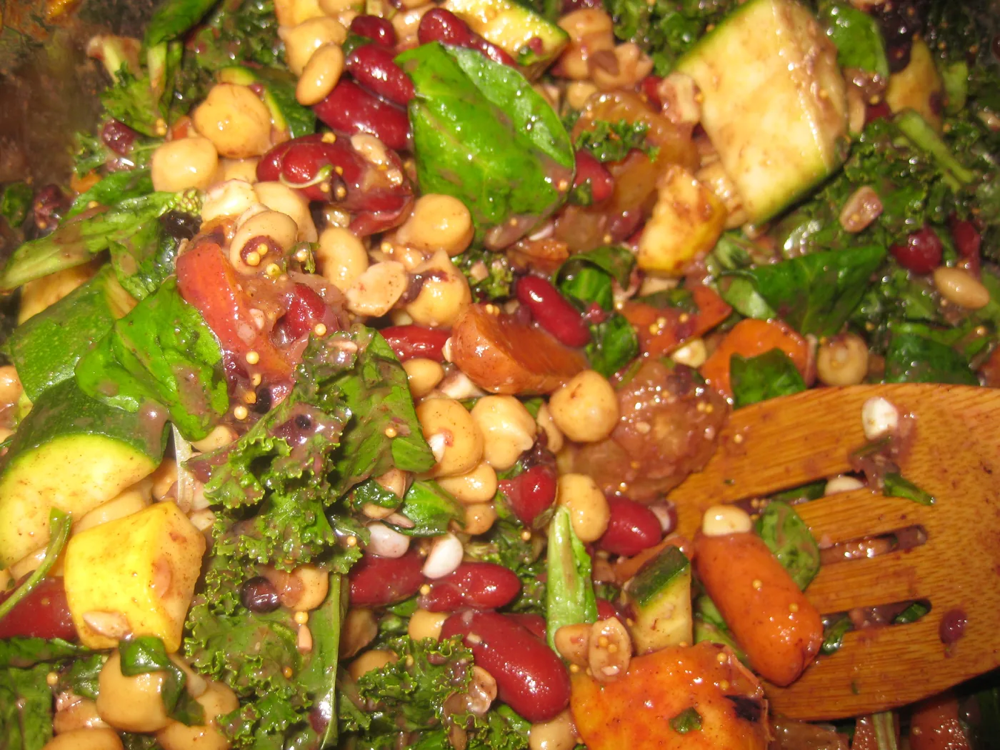

Blog · July 8, 2011
Vegan experiment: day 10 of 45

Vegan = plants only. No animal products. No milk, cheese, butter, eggs, or meat. I am minimizing starches (forget bread; grains sparingly) and maximizing whole foods.
Volumetrically, about 60% of my diet is vegetables; 30% fruit; 10% nut and oil.
I eat A LOT. A 90% vegetable and fruit diet has that effect. I average about 30 different types of fruits and veggies each day. I have developed a serious affinity for Curries and Chinese Five Spice. My body feels great.
Creative cooking is a fun new challenge: using only plant based products, how can I build a complete protein loaded with phytonutrients that tastes spunky? Innumerable ways, it seems. I tend to make super-sized supermixes of about 15 types of veg/fruit that I munch on for several days.
Here’s the one I made tonight:



I wonder what systemic chemical changes are going on in my body. Biochemists, please, chime in.
The goal of this project is to explore potential relations between creative output and health. So far, I’ve gone through all 595 TEDx music performances. I’ve started playing ukulele (almost there with It’s a Wonderful World). I finally sent Billy Valentine a demo of my autotune performance from TEDActive (remixxx!). I’m almost finished completing the corporate wellness program process for Sterling Health. I’ve learned the basics of Inkscapes, a vector based graphic design program. I joined Google +. I’ve started recording brainstorms on the iamtpain autotune app. The last thing on this list you should definitely try.
First published on my old blog, amyrobinson.wordpress.com, July 8, 2011.